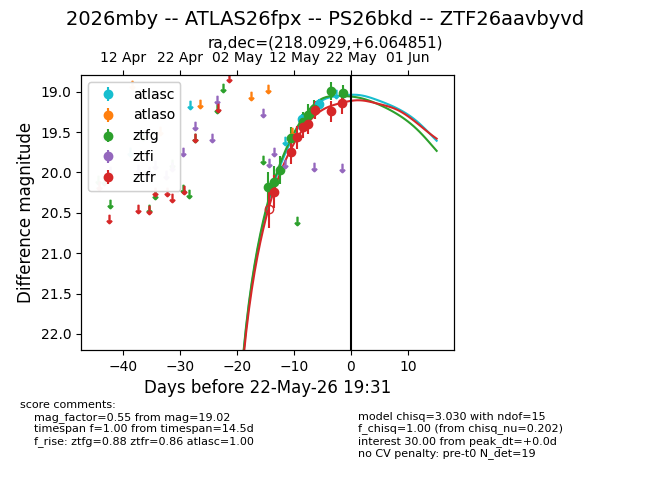
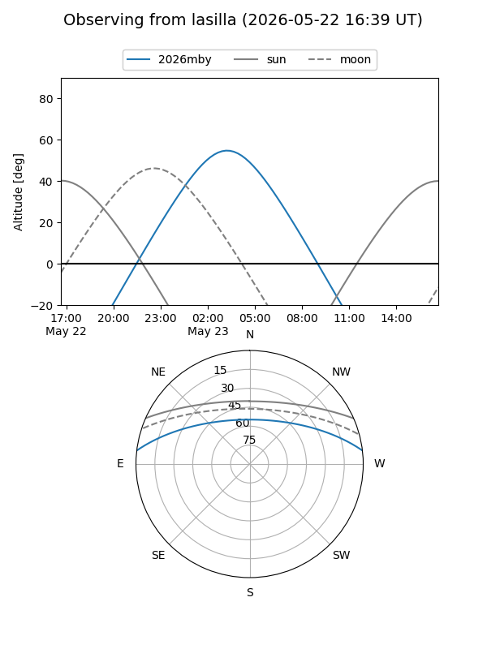
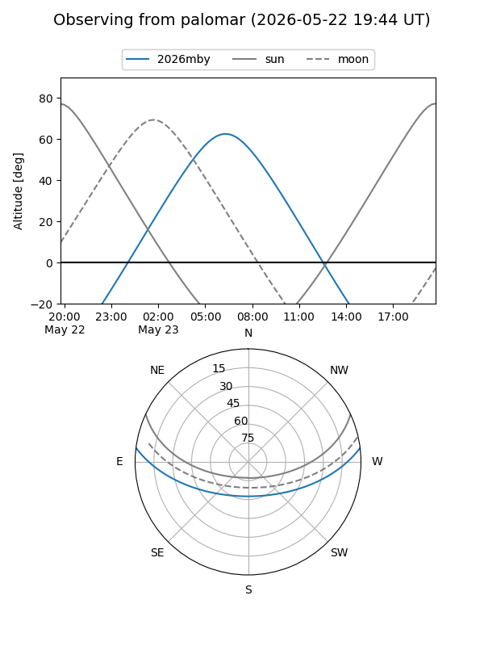
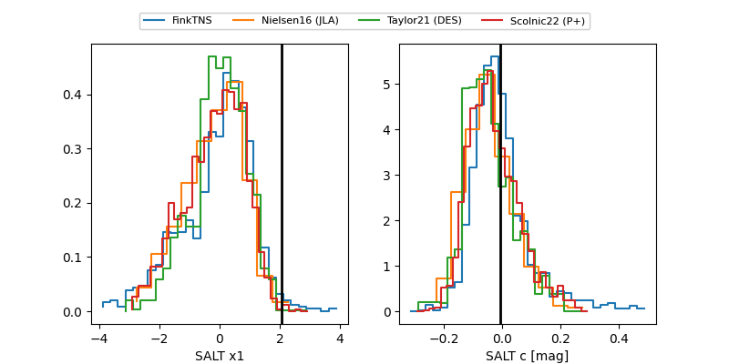

2026mby
Target 2026mby at 2026-05-22 19:33
Aliases and brokers:
lsst-FINK: link
lsst-Lasair: link
lsst-ALeRCE: link
ztf-FINK: link
ztf-Lasair: link
ztf-ALeRCE: link
TNS: link
YSE: link
alt names
ZTF26aavbyvd (ztf,fink_ztf)
2026mby (tns,yse)
ATLAS26fpx (atlas)
PS26bkd (panstarrs)
Coordinates:
equatorial (ra, dec) = 218.0929,+6.06485
equatorial (HMS+DMS) = 14:32:22.30,+06:03:53.46
galactic (l, b) = (356.2187,+58.07431)
Flags:
Photometry:
last atlasc=19.15, ztfg=19.02, ztfr=19.14
2 atlasc, 9 ztfg, 8 ztfr detections
Lightcurve

Visibility


Additional plots
